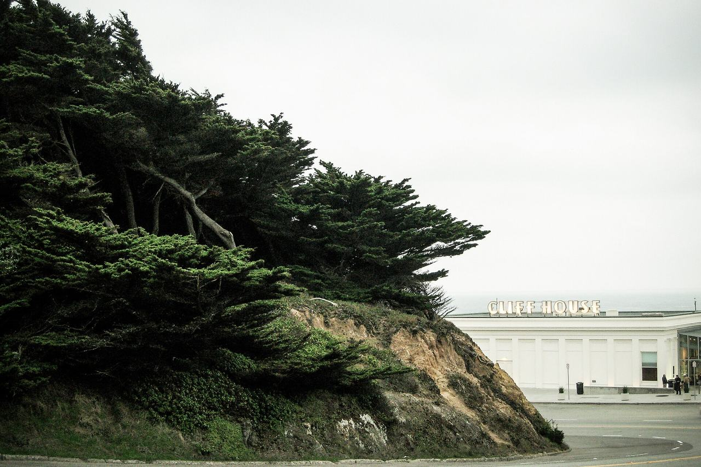

Outer Richmond
The city's Outer Richmond analysis neighborhood, running west from Park Presidio Boulevard to Ocean Beach. Coverage begins with the parcels the Office of the Assessor-Recorder photographed for tax assessment between 1947 and 1975.

Map
Named buildings and landmarks
-
-
-
-
Streets documented so far
- 14th Avenue
1 building, built 1911. - 15th Avenue
8 buildings, built 1906–1921; 1 in the Fernando Nelson Mission Revival Rowhouse Historic District. - 16th Avenue
1 building, built 1930. - 17th Avenue
1 building, built 1918. - 18th Avenue
1 building, built 1918. - 19th Avenue
2 buildings, built 1900–1964. - 20th Avenue
2 buildings, built 1921. - 21st Avenue
1 building, built 1950. - 22nd Avenue
1 building, built 1915. - 23rd Avenue
2 buildings, built 1922–1972. - 24th Avenue
1 building, built 1923. - 25th Avenue
1 building, built 1950. - 26th Avenue
1 building, built 1949. - 27th Avenue
1 building, built 1900. - 28th Avenue
1 building, built 1951. - 29th Avenue
1 building, built 1948. - 30th Avenue
2 buildings, built 1929–1950. - 31st Avenue
1 building, built 1950. - 32nd Avenue
1 building, built 1940. - 33rd Avenue
2 buildings, built 1939–1949. - 34th Avenue
1 building, built 1900. - 35th Avenue
2 buildings, built 1911–1987. - 36th Avenue
1 building, built 1962. - 37th Avenue
4 buildings, built 1914–1925. - 38th Avenue
1 building. - 40th Avenue
1 building, built 1924. - 41st Avenue
1 building, built 1913. - 42nd Avenue
1 building, built 1911. - 44th Avenue
1 building, built 1950. - 45th Avenue
2 buildings, built 1950. - 46th Avenue
2 buildings, built 1923. - 48th Avenue
2 buildings, built 1950. - Anza Street
2 buildings, built 1919–1924. - Balboa Street
9 buildings, built 1915–1976. - Cabrillo Street
5 buildings, built 1922–1950. - California Street
1 building, built 1967. - Clement Street
2 buildings, built 1921–2017. - Fulton Street
1 building, built 1938. - Geary Boulevard
1 building, built 1919. - La Playa
1 building, built 1984. - Lake Street
1 building, built 1922. - Point Lobos Avenue
1 building, built 1900. - Shore View Avenue
1 building, built 1916.
Parks and public spaces
- Balboa Natural Area
Neighborhood park or playground, 1.8 acres. - Cabrillo Playground
Neighborhood park or playground, 1.0 acres. - Fulton Playground
Neighborhood park or playground, 40,075 sq ft. - Lincoln Park
Regional park, 112.8 acres. - Richmond Playground
Neighborhood park or playground, 40,511 sq ft. - Richmond Rec Center
Neighborhood park or playground, 40,511 sq ft.
Historic districts here
Adjacent neighborhoods
Ocean Beach closes the avenues to the west, Golden Gate Park to the south, and Lincoln Park and Land's End to the north-west. Seacliff adjoins north-east above the bluffs, and the Inner Richmond continues east from Park Presidio Boulevard.